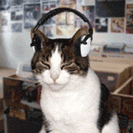

📁 C:\CarlOS\ — mapa
_
🖥 C:\CarlOS\
📂 perfil ✓
📂 música ✓
📂 mastodon ✓
📂 blog
📂 pelis_vistas
📂 links
clic: abre/enfoca la ventana en el escritorio →
👤 perfil — carlos.exe
×
CarlOS
2005 · he/they/she · Zaragoza · DE @ UNIZAR
404
🎵 música — reproductor.exe
×

♪ ARTISTA — CANCIÓN SONANDO AHORA ♪
84.201 scrobbles
🐘 mastodon — @copaco
×
último toot: contenido del toot aquí…
· hace 2 h
responder en mastodon.social ↗
letterboxd
github
last.fm
Parece que estás visitando mi web. ¿Necesitas ayuda? Prueba a arrastrar las ventanas o escribe
help
en la consola.
Inicio
mapa
perfil
música
mastodon
404
19:05